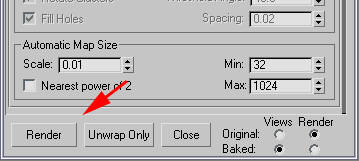

Techniques for Creating Shade Maps
Overview
Here is a neat little trick you can use to make good shade maps; its done using Ambient Occlusion shader as an unlit diffuse texure in Autodesk's MentalRay, and grabbing it with Max's Render to Texture tools. It works quite well, and is pretty quick to make.
Process
Step 1
First, you need to assign MentalRay as your Renderer.
Open your renderer settings, and go to the Common tab, and open the Assign Renderer tab. Click the ... button, and pick Mental Ray.
Step 2
Now, click the Processing tab, and enable the Material Overide. Click, and drag the Material into the Material Editor, and make it an Instance.
Step 3
Now, click the Diffuse tab, and pick Ambient/Reflective Occlusion
Step 4
This will pop up the Ambient Occlusion shader settings.
You can change the samples from 16 to 25 to 50 depending on how smooth of a shade map that you want. Higher numbers take longer.
Now, we need to tell it to exclude the lowpoly model from the calculation, otherwise it will cat a shadow on the highpoly object wherever it protrudes through it. ( You can try setting the low poly to not cast shadows, but that does not seem to work). We need to set the Incl./Excl. Object ID to the ID of the low Poly. Negative values make it exclude, so set it to -30.
Step 5
Click the up arrow to go to the top of the material tree. Then set the Self-Illumination value to 100.
Step 6
Now we need to set the LowPoly models Object ID to the one we set to be Excluded in the Ambient Occlusion shader, which was 30.
You do this by right clicking on the LowPoly model and going to its properties. Under G-Buffer, set the Object Channel to 30.
Step 7
Now we need set up the scene for the Render to Texture Process.
Select the LowPoly model, and apply a projection modifier.
Under Geometry Selection, hit Pick List to select your HighPoly model.
Step 8
You can make a selection set of my HighPoly model, because it makes adding them to the Projection Modifier much easier. So, under Selection Set, pick your HighPoly set, which in this case is Chest_High.
Step 9
After adding the HighPoly Models, the cage goes crazy.
You can fix this by hitting the rest button under the Cage settings.
Now you can use the Push value to see what trace distance you need. You don't have to use the cage, rather just manually set the trace distance inside the render texture options, this gives you the closest results to SHTools or newer versions of 3D Studio Max.
Step 10
Hit the 0 (zero) key to bring up the Render To Texture tool.
Click Enable under Projection Mapping.
Set Padding to 4 or so.
Make sure Use Existion Mapping is checked.
Click Add under Output, and Choose DiffuseMap.
Step 11
Hit the Options button, and uncheck Use Cage, if you want it to work like SHTools or newer versions of 3D Studio Max, otherwise it will use your Projection Cage's Push distance. Offset is the trace distance you want.
Step 12
Change the output path and filename if you would like.
Set the Resolution.
Make Sure you check Shadows, or you will get a white image.
Step 13
Press the magic Render button.

Step 14
The final shade map, great for texturing. ;)
Enjoy!
Important!
You are viewing documentation for the Unreal Development Kit (UDK).
If you are looking for the Unreal Engine 4 documentation, please visit the Unreal Engine 4 Documentation site.